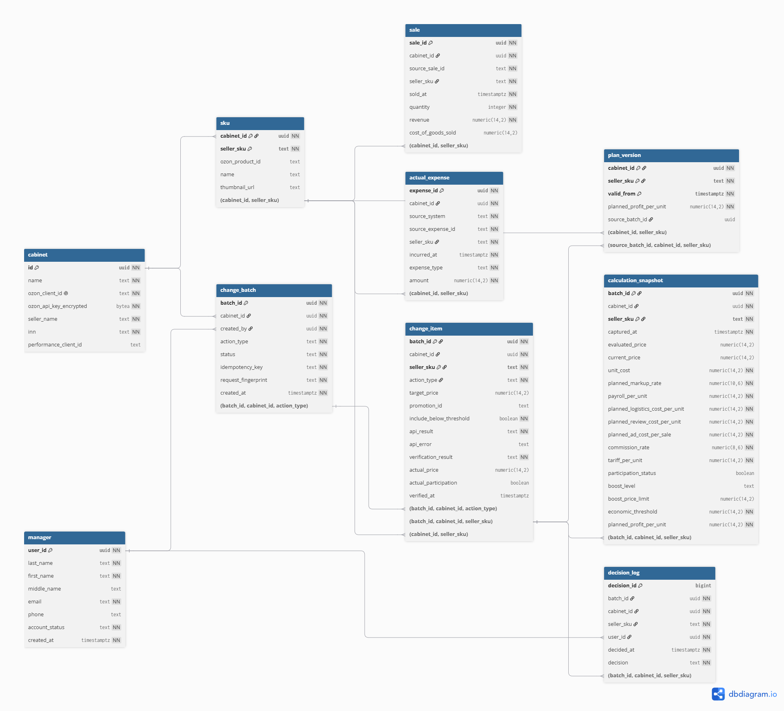

Контейнерная диаграмма C4 и границы системы.
1. Общий обзор
Назначение
Серверная часть MarginPilot связывала данные 1С и Ozon с действиями менеджера: рассчитывала экономику продажи SKU, проверяла ценовые решения до отправки, передавала их в Ozon и сверяла фактический результат. После продаж она сопоставляла плановую и фактическую экономику. Расчёт оценивал результат одной продажи при заданной цене, а не будущий спрос.
Высокоуровневая логика
- Получение данных. MarginPilot получал из 1С и Ozon данные, необходимые для расчёта экономики выбранных SKU, работы с ценами и акциями.
- Оценка решения. Для предложенной цены система рассчитывала экономику продажи и сравнивала цену с экономическим порогом. Участие в акции оценивалось с учётом отдельной цены входа.
- Контроль перед отправкой. При цене ниже порога система показывала предупреждение. В отправку попадали допустимые SKU и только те позиции ниже порога, которые менеджер подтвердил вручную; его решение сохранялось в журнале.
- Отправка и сверка. MarginPilot передавал пакет в Ozon через API, обрабатывал ответ по SKU и проверял применённую цену или статус участия. Если сверка не удавалась, система повторяла чтение позже. Таймаут не запускал повторную отправку изменения.
- План-факт. Исходные значения расчёта сохранялись для последующего разбора решения. После подтверждённого изменения система сохраняла новую версию плана. При анализе продаж она сопоставляла каждую продажу с действовавшей на тот момент версией и учитывала фактические расходы, включая рекламу.
Таким образом, ответ на команду и фактическое состояние товара в Ozon рассматривались как разные результаты. Если после таймаута состояние SKU не удалось проверить, MarginPilot повторял чтение позже, не отправляя изменение заново.
Допустимые состояния пакета и результата по SKU показаны отдельно от потока обработки.
2. Входные данные
Это данные для расчёта и отправки, а не перечень таблиц БД. Исходные значения решения сохранялись; проектная схема хранения показана в разделе 8. Типы UUID, String, Decimal и DateTime здесь логические. Суммы указаны в рублях, ставка комиссии — долей от 0 до 1. Товар определяется парой cabinet_id + seller_sku: один артикул может быть в разных кабинетах.
2.1. Товар
Источники: 1С и Ozon.
| Атрибут | Тип | Описание |
|---|---|---|
cabinet_id | UUID | Кабинет Ozon, в котором ведётся товар и выполняется действие. |
seller_sku | String | Артикул продавца, по которому менеджер находит товар. |
ozon_product_id | String | Идентификатор товара на стороне Ozon для сопоставления с ответом API. |
name | String | Название товара в списке SKU; не влияет на расчёт экономики. |
thumbnail_url | String | Ссылка на миниатюру товара для интерфейса, если она доступна. |
2.2. Плановые параметры экономики
Источники: данные 1С и параметры расчёта MarginPilot. Раздел не предполагает, что каждый параметр приходил из 1С отдельным полем.
| Атрибут | Тип | Описание |
|---|---|---|
cabinet_id | UUID | Кабинет Ozon, к которому относятся параметры. |
seller_sku | String | Артикул товара, для которого заданы параметры. |
unit_cost | Decimal | Себестоимость одной единицы товара. |
planned_markup_rate | Decimal | Плановая надбавка к себестоимости в расчётном сценарии. |
payroll_per_unit | Decimal | Плановая доля фонда оплаты труда на одну продажу. |
planned_logistics_cost_per_unit | Decimal | Плановые затраты на логистику одной продажи; учитываются отдельно от комиссии. |
planned_review_cost_per_unit | Decimal | Плановые затраты на отзывы в расчёте на одну продажу; отдельная статья экономики SKU. |
planned_ad_cost_per_sale | Decimal | Плановые рекламные затраты на одну продажу; не равны фактическому списанию. |
2.3. Цена и условия продажи Ozon
Источник: Ozon API.
| Атрибут | Тип | Описание |
|---|---|---|
cabinet_id | UUID | Кабинет Ozon, из которого получены условия. |
seller_sku | String | Артикул товара, к которому относятся условия. |
current_price | Decimal | Цена для показа и сверки после успешного чтения из Ozon; отсутствие цены не заменяется нулём. |
commission_rate | Decimal | Ставка комиссии Ozon, используемая в расчёте экономики. |
tariff_per_unit | Decimal | Тариф Ozon для одной продажи по выбранной схеме; если он уже включён в затраты на логистику, повторно не прибавляется. |
2.4. Условия акции Ozon
Источник: Ozon API.
| Атрибут | Тип | Описание |
|---|---|---|
cabinet_id | UUID | Кабинет Ozon, в котором действует акция. |
seller_sku | String | Артикул товара, для которого оценивается участие. |
promotion_id | String | Акция, в которую товар может войти или из которой может выйти. |
participation_status | Boolean | Участвует ли товар в акции после успешного чтения; отсутствие ответа не означает false. |
boost_level | String | Уровень бустинга, для которого задано ценовое условие. |
boost_price_limit | Decimal | Цена, с которой сравнивается предложение для этого уровня бустинга. |
2.5. Решение менеджера и параметры отправки
Источник: интерфейс MarginPilot и авторизованная сессия.
| Атрибут | Тип | Описание |
|---|---|---|
cabinet_id | UUID | Кабинет Ozon, в котором выполняется действие. |
seller_sku | String | Артикул выбранного товара. |
user_id | UUID | Менеджер, от имени которого выполняется действие. |
idempotency_key | String | Ключ команды на отправку пакета; при повторе того же запроса помогает не создать вторую отправку. Передаётся в HTTP-заголовке, а не выбирается менеджером. |
action_type | Enum | Изменить цену, добавить товар в акцию или удалить из акции. |
proposed_price | Decimal | Новая обычная цена; заполняется при изменении цены. |
promotion_id | String | Акция для добавления или удаления товара. |
promo_entry_price | Decimal | Отдельная цена входа в акцию; при выходе не требуется. |
include_below_threshold | Boolean | Ручное подтверждение отправки этого SKU ниже экономического порога; по умолчанию false. |
2.6. Продажа
Источник продажи — Ozon. Себестоимость проданных единиц в проектной схеме берётся из 1С.
| Атрибут | Тип | Описание |
|---|---|---|
source_sale_id | String | Устойчивый ключ строки продажи при загрузке из Ozon; вместе с кабинетом позволяет не загрузить строку повторно. Это не обязательно номер отправления или поле API с таким названием. |
cabinet_id | UUID | Кабинет Ozon, в котором совершена продажа. |
seller_sku | String | Артикул проданного товара. |
sold_at | DateTime | Момент продажи, по которому выбирается действовавшая версия плана. |
quantity | Integer | Количество проданных единиц. |
revenue | Decimal | Фактическая выручка по продаже до вычета перечисленных ниже расходов. |
cost_of_goods_sold | Decimal? | Себестоимость проданных единиц по данным 1С. Проектное дополнение для расчёта фактической прибыли; если данных нет, прибыль нельзя достоверно рассчитать. |
2.7. Фактический расход
Источник: фактические финансовые и рекламные данные.
| Атрибут | Тип | Описание |
|---|---|---|
source_system | Enum | Источник записи: one_c или ozon. |
source_expense_id | String | Устойчивый ключ строки расхода при загрузке; может быть сформирован интеграцией, если источник не даёт готового ID. Вместе с источником и кабинетом защищает от повторной загрузки. |
cabinet_id | UUID | Кабинет Ozon, к которому относится расход. |
seller_sku | String | Артикул товара, к которому отнесён расход. |
incurred_at | DateTime | Дата и время расхода; он может возникнуть без продажи. |
expense_type | Enum | Статья фактического расхода: комиссия, логистика, отзывы или реклама; одно списание не учитывается в двух статьях. |
amount | Decimal | Фактически списанная сумма. |
2.8. Запрос анализа экономики
Источник: интерфейс MarginPilot.
| Атрибут | Тип | Описание |
|---|---|---|
cabinet_id | UUID | Кабинет Ozon для анализа. |
seller_sku | String | Артикул товара для сравнения плана с фактом. |
period_start | Date | Начало выбранного периода. |
period_end | Date | Конец выбранного периода. |
Экономический порог, результат сверки, версии плана и отклонение факт − план — не входные атрибуты. MarginPilot рассчитывал или формировал их из перечисленных данных.
3. Валидации
Структурные проверки определяют, достаточно ли данных для обработки запроса. Бизнес-проверки определяют, какие SKU можно включить в действие и как трактовать результат.
3.1. Структурные валидации
| Объект | Проверка |
|---|---|
| Товар и решение | Указаны кабинет и артикул продавца; для операций, которым нужен ozon_product_id, товар сопоставлен с идентификатором Ozon. |
| Числовые параметры | Цена и плановые затраты переданы как числа в рублях, комиссия и плановая надбавка — как доли. Цена больше нуля; плановые затраты и надбавка неотрицательны; ставка комиссии находится в диапазоне от 0 до 1. |
| Действие менеджера | Тип действия известен системе. Для изменения обычной цены указана proposed_price, для входа в акцию — promotion_id и отдельная promo_entry_price, для выхода — promotion_id. |
| Пакет | Каждый выбранный SKU представлен в пакете один раз. SKU из разных кабинетов не смешиваются в одном запросе к Ozon. |
| Продажи и расходы | У продажи есть source_sale_id, дата и положительное количество; у расхода — source_system, source_expense_id, дата и статья. Повторная загрузка определяется по паре «кабинет + ключ продажи» или тройке «кабинет + источник + ключ расхода». Внутренние UUID создаёт MarginPilot. |
| Период анализа | Начало и конец периода заданы корректными датами; начало не позже конца. |
Данные, не прошедшие структурную проверку, не считаются корректным основанием для расчёта или отправки. Отсутствующее значение не заменяется нулём.
3.2. Бизнес-валидации
| Этап | Правило и результат |
|---|---|
| Выбор товаров | Пока на основном экране не выбран ни один SKU, действие недоступно. Если после предупреждения итоговый пакет пуст, MarginPilot показывает «SKU не выбраны» и не отправляет запрос. |
| Изменение цены | Для каждого выбранного SKU предложенная цена сравнивается с его экономическим порогом. Цены ниже порога попадают в панель предупреждения; соответствующие чекбоксы изначально пустые. |
| Подтверждение предупреждения | В пакет входят SKU с допустимой ценой и только вручную отмеченные SKU ниже порога. Автор и время сохраняются вместе с пакетом; по каждой включённой позиции ниже порога фиксируется отдельное решение. «Отмена» прекращает отправку всего текущего пакета. |
| Управление акцией | При входе в акцию с порогом сравнивается отдельная цена входа. При выходе такая проверка не нужна; прежнюю цену восстанавливает Ozon, MarginPilot не отправляет её повторно. |
| Незавершённое действие по акции | Пока результат отправки по товару и акции неизвестен, повторный запрос на то же действие не создаётся. Сначала MarginPilot проверяет актуальный статус в Ozon. |
| Результат отправки | Ответ Ozon обрабатывается по SKU. Ошибка по позиции либо несовпадение целевого и фактического состояния не считаются успешным применением. После таймаута повторяется чтение состояния, а не отправка изменения. |
| Экономика и план-факт | Комиссия, логистика, отзывы и реклама учитываются отдельными статьями; один тариф не прибавляется дважды. Для продажи берётся версия плана, действовавшая в её момент. Если продаж за период нет, показатели на проданную единицу не рассчитываются. |
4. Основная логика
В каждом шаге указан исполнитель действия. SQL приведён только там, где сервису нужно сохранить данные в PostgreSQL или прочитать их для анализа. Это реконструкция запросов для кейса, а не исходный код: PostgreSQL использовался, но имена таблиц в примерах условные. Параметры $1, $2 и далее передаёт сервер.
Шаг 1: «Получить данные для оценки SKU»
Сервис: получает необходимые данные через интеграции с 1С и Ozon и сопоставляет их по кабинету и SKU. Важно не подставлять ноль вместо отсутствующей цены или расхода.
Шаг 2: «Сравнить цену действия с экономическим порогом»
Сервис: рассчитывает экономику SKU, затем сравнивает предложенную обычную цену или отдельную цену входа в акцию с рассчитанным порогом. Для выхода из акции такое сравнение не требуется. Отсутствие обязательных данных — ошибка проверки, а цена ниже порога — предупреждение, которое менеджер может подтвердить.
Шаг 3: «Сформировать пакет после решения менеджера»
Сервис: включает SKU с допустимой ценой и только те SKU ниже порога, которые менеджер отметил в панели. При «Отмена» не отправляет ничего. Если после «Подтвердить» список пуст, показывает «SKU не выбраны» и не вызывает Ozon API. При выходе из акции новую цену для восстановления не формирует: её восстанавливает Ozon.
Шаг 4: «Зафиксировать решение после предупреждения»
Сервис: сохраняет непустой пакет с автором и временем, его состав и исходные значения расчёта по SKU. Отдельную запись в журнале создаёт для каждого вручную включённого SKU ниже порога. При отмене записей об отправке нет.
SQL: фрагмент показывает один элемент уже созданного пакета. Сервис сохраняет все элементы пакета; отдельная запись в decision_log нужна только для SKU, вручную включённого ниже порога. Сохранение исходных значений подтверждено, но таблица calculation_snapshot — проектное решение, а не восстановленный исходный способ хранения.
-- Пакет уже сформирован сервисом: сохраняем один его элемент.
-- $1 — пакет, $2 — кабинет, $3 — SKU, $4 — действие,
-- $5 — целевая цена (при выходе из акции NULL), $6 — акция,
-- $7 — вручную включённый SKU ниже порога (true/false).
INSERT INTO change_item
(batch_id, cabinet_id, seller_sku, action_type, target_price, promotion_id,
include_below_threshold)
VALUES ($1, $2, $3, $4, $5, $6, $7);
-- Выполняется только при $7 = true: этот SKU отправляют ниже порога.
-- $8 — пользователь; время и принятое решение сохраняем вместе с записью.
INSERT INTO decision_log
(batch_id, user_id, decided_at, cabinet_id, seller_sku, decision)
SELECT $1, $8, CURRENT_TIMESTAMP, $2, $3, 'include_below_threshold'
WHERE $7 = TRUE;Шаг 5: «Сохранить ответ Ozon по SKU»
Сервис: отправляет пакет через Ozon API и разбирает ответ по SKU. Для цен учитывает updated и errors, для акций — принятые и отклонённые товары. При таймауте результат остаётся неизвестным; повторной отправки только из-за таймаута нет.
SQL: сохраняет уже определённый сервисом результат по позиции. Запрос к Ozon — не SQL.
-- Сохраняем ответ API по одному SKU.
UPDATE change_item
-- $4 — результат ответа, $5 — причина отказа, если она есть.
SET api_result = $4,
api_error = $5
-- Три условия ниже находят нужную позицию, а не весь пакет.
WHERE batch_id = $1
AND cabinet_id = $2
AND seller_sku = $3;Шаг 6: «Сверить фактическое состояние в Ozon»
Сервис: после отправки автоматически читает в Ozon актуальную цену или статус участия и сравнивает их с отправленным состоянием. Если прочитать состояние не удалось, сервис повторяет чтение позже, но не отправляет действие повторно.
SQL: сохраняет результат сравнения после чтения из Ozon. В этой модели чтение через API и сравнение с целью выполняет сервис.
-- Сервис уже сравнил новое чтение Ozon с целью; фиксируем итог сверки.
UPDATE change_item
-- $4 — итог сравнения, $5 — время новой проверки.
SET verification_result = $4,
verified_at = $5
-- Обновляем запись конкретного SKU в конкретном пакете и кабинете.
WHERE batch_id = $1
AND cabinet_id = $2
AND seller_sku = $3;Шаг 7: «Сохранить новую версию плана»
Сервис: после подтверждения целевого состояния создаёт новую версию планового расчёта SKU. Прежнюю версию не перезаписывает; сохранённые исходные значения позволяют разобрать расчёт, на котором основано решение. Время ответа API само по себе не доказывает момент применения изменения; правило определения valid_from в этом примере не конкретизируется.
SQL: записывает подготовленную версию. Запрос не решает, подтверждено ли применение: это установлено на шаге 6.
-- Записываем новый план только после подтверждённого применения изменения.
-- INSERT создаёт новую версию; прежнюю запись не меняем.
INSERT INTO plan_version
(cabinet_id, seller_sku, valid_from, planned_profit_per_unit, source_batch_id)
-- $3 — начало действия версии, $4 — плановая прибыль на единицу,
-- $5 — пакет, из которого возникла эта версия.
VALUES ($1, $2, $3, $4, $5);Шаг 8: «Связать продажи с действовавшим планом»
Сервис: по выбранному SKU и периоду показывает план, факт и отклонение. Для каждой продажи нужен план, действовавший на момент её совершения. Фактические расходы собираются отдельно; иначе соединение каждой продажи с каждым расходом могло бы задвоить суммы.
SQL: выбирает продажи с подходящими версиями плана и отдельно суммирует расходы по статьям. Итоговое отклонение факт − план рассчитывается после получения этих наборов данных.
Как читать запросы: ниже два самостоятельных запроса; каждый заканчивается точкой с запятой. Это удобный порядок чтения, а не описание того, в каком порядке PostgreSQL физически выполняет операции.
- В первом запросе найти продажи нужного кабинета, SKU и периода:
FROM saleи внешнийWHERE. - Для каждой продажи найти версии плана того же кабинета и SKU, начавшие действовать не позже продажи:
LEFT JOIN LATERALи внутреннийWHERE. - Из подходящих версий взять самую позднюю:
ORDER BY valid_from DESC LIMIT 1. Продажу без плана сохранить сNULLблагодаряLEFT JOIN. - Внешний
SELECTвернуть продажу и умножить плановую прибыль на единицу на проданное количество. - Во втором запросе отдельно выбрать расходы за тот же период, сгруппировать их по статье и сложить суммы:
FROM,WHERE,GROUP BY,SUM.
-- Параметры обоих запросов:
-- $1 — кабинет, $2 — SKU, $3 — первый день, $4 — последний день периода.
-- ЗАПРОС 1. Продажи и действовавший план.
-- SELECT определяет столбцы результата; s — продажа, v — найденный план.
SELECT s.sale_id, s.source_sale_id, s.seller_sku, s.sold_at, s.quantity, s.revenue,
s.cost_of_goods_sold,
v.planned_profit_per_unit,
-- AS даёт расчётному столбцу имя planned_profit.
s.quantity * v.planned_profit_per_unit AS planned_profit
-- FROM указывает исходные строки: фактические продажи.
FROM sale AS s
-- LATERAL позволяет подзапросу обращаться к текущей продаже s.
-- LEFT JOIN оставляет продажу в результате, даже если план не найден.
LEFT JOIN LATERAL (
-- Ищем версии плана для одной текущей продажи.
SELECT p.planned_profit_per_unit
FROM plan_version AS p
-- Совпадают кабинет и SKU; будущие планы исключены.
WHERE p.cabinet_id = s.cabinet_id
AND p.seller_sku = s.seller_sku
AND p.valid_from <= s.sold_at
-- DESC сортирует от новой версии к старой.
ORDER BY p.valid_from DESC
-- LIMIT 1 оставляет ближайшую версию, уже действовавшую к продаже.
LIMIT 1
-- ON TRUE: дополнительных условий соединения нет; они уже внутри подзапроса.
) AS v ON TRUE
-- Внешний WHERE ограничивает сами продажи кабинетом, SKU и периодом.
-- AND означает, что все перечисленные условия должны выполняться вместе.
WHERE s.cabinet_id = $1
AND s.seller_sku = $2
AND s.sold_at >= $3::date
-- ::date задаёт тип даты; прибавление дня и знак < включают весь последний день.
AND s.sold_at < ($4::date + INTERVAL '1 day');
-- ЗАПРОС 2. Фактические расходы по статьям.
-- SUM складывает суммы; AS называет итоговый столбец actual_amount.
SELECT expense_type, SUM(amount) AS actual_amount
-- FROM берёт записи о расходах, не присоединяя их к каждой продаже.
FROM actual_expense
-- WHERE применяет к расходам те же кабинет, SKU и даты.
WHERE cabinet_id = $1
AND seller_sku = $2
AND incurred_at >= $3::date
AND incurred_at < ($4::date + INTERVAL '1 day')
-- GROUP BY выдаёт отдельную сумму для каждой статьи расхода.
GROUP BY expense_type;В условном примере с версиями плана от 1 и 5 октября продажа 6 октября возьмёт план от 5-го, а продажи 2–4 октября — план от 1-го: версия от 5-го для них ещё не подходит. Если действовавший план не найден, плановый результат остаётся неопределённым, а не заменяется нулём. При нулевом количестве продаж расходы остаются видны, но показатели на единицу не рассчитываются.
5. Интеграции
5.1. Внешние сервисы
| Система | Направление | Роль в процессе |
|---|---|---|
| 1С | В MarginPilot | Данные о товарах и затратах для оценки экономики SKU. |
| Ozon API | В MarginPilot | Текущие цены, комиссии и тарифы, условия акций, продажи и фактические рекламные расходы. После отправки — актуальные цены и статусы участия для автоматической сверки. |
| Ozon API | Из MarginPilot | Пакеты новых цен и решения о добавлении или удалении SKU из акции. |
5.2. База данных
PostgreSQL хранит данные, которые нужны после завершения отдельного запроса: исходные значения расчёта, версии плана, пакеты изменений, результаты отправки и сверки, продажи и фактические расходы. Названия таблиц ниже относятся к проектной схеме раздела 8, а не к исходной БД.
Чтение: cabinet, manager, sku, change_batch, change_item, calculation_snapshot, decision_log, plan_version, sale, actual_expense.
Запись: change_batch, change_item, calculation_snapshot, decision_log, plan_version, sale, actual_expense. Справочники cabinet, manager, sku заполняются при настройке и синхронизации, а не при отправке пакета.
5.3. Кэш (проектное дополнение в памяти приложения)
- Название товара и ссылка на миниатюру (TTL: 10 минут). Цена, комиссия и тариф в этот кэш не входят. Использование такого кэша в исходной реализации не подтверждено.
6. Исключительные случаи
Коды ниже относятся к реконструированному HTTP API между интерфейсом и MarginPilot, а не к ответам Ozon. Их значения и title приведены в HTTP-контракте.
6.1. Валидационные ошибки (400, 422)
| Случай | HTTP-код | Результат |
|---|---|---|
| Нечитаемый JSON или неверный формат параметра | 400 | Запрос не обрабатывается. |
| Нет обязательных данных SKU, значения некорректны, повторяется SKU или смешаны кабинеты | 422 | Пакет не отправляется. |
| Неверный формат даты | 400 | План-факт не рассчитывается до исправления. |
| Начало периода позже конца | 422 | План-факт не рассчитывается до исправления. |
| После подтверждения итоговый пакет пуст в интерфейсе | — | Показано «SKU не выбраны»; запрос не отправляется. |
| Пустой пакет всё же поступил напрямую в API | 422 | Запрос отклоняется. |
| Цена ниже порога без подтверждения в запросе на отправку | 422 | Пакет не принимается до подтверждения или исключения SKU. Сама цена ниже порога — предупреждение, которое можно подтвердить. |
6.2. Серверные ошибки (500, 503, 504)
| Случай | HTTP-код | Результат |
|---|---|---|
| Внутренняя ошибка до принятия пакета | 500 | Команда не принята. |
| Нужный внешний источник недоступен до принятия команды | 503 | Команда не принята. |
| Чтение внешнего источника завершилось таймаутом до принятия команды | 504 | Команда не принята. |
После ответа 202 новый код для исходного POST уже не возвращается. Таймаут Ozon, отказ по отдельным SKU и неудачная сверка отражаются в состоянии пакета: MarginPilot проверяет актуальные цену или статус и не повторяет отправку автоматически.
7. Выходные данные
Внутренний API возвращает результаты оценки и план-факт с кодом 200. При создании пакета он отвечает 202 Accepted: команда сохранена, но результат Ozon ещё неизвестен. Итог отправки и отдельной сверки доступен по каждому SKU при чтении состояния пакета.
Ошибки до принятия команды возвращаются в формате application/problem+json. После 202 отказ Ozon или расхождение с фактической ценой отражаются в состоянии SKU, а не в новом ответе на исходный POST.
Полные примеры успешных ответов, частичного результата и ошибок приведены в HTTP-контракте; поля и коды в нём реконструированы для кейса.
8. Проектная схема PostgreSQL
Изображение экспортировано из редактируемой DBML-модели.

9. Диаграммы последовательностей
Диаграммы показывают порядок взаимодействий в трёх сценариях из Use Cases. MarginPilot разделен на интерфейс и сервер. Маршруты на стрелках сокращены; полные пути приведены в HTTP-контракте.
В сценариях отправки 202 Accepted завершает запрос интерфейса, но не подтверждает результат Ozon. Блок par показывает два параллельных процесса — обработку пакета на сервере и просмотр результата менеджером. Блок loop показывает автоматические запросы статуса, пока страница открыта и пакет обрабатывается; очередной GET не привязан к моменту записи результата в базу.